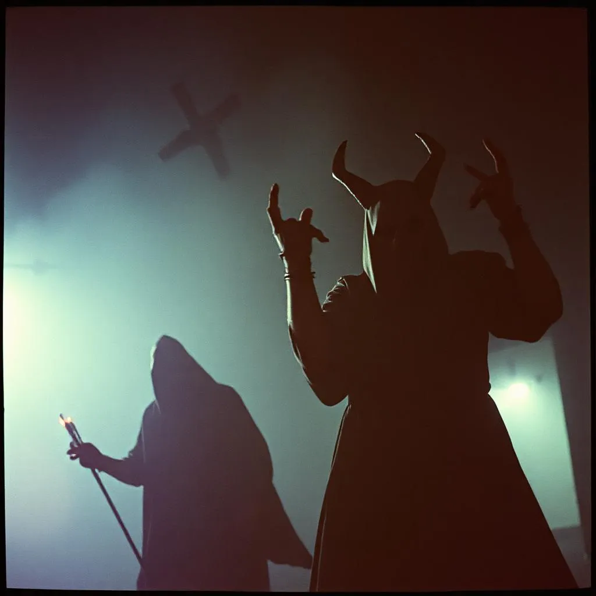

Bukás belűről
Verthar birodalma virágzott… torz módon. Rettegés, rend, és véres rituálék uralták a mindennapokat. De senki nem gondolta volna, hogy a vég nem kívülről, hanem belülről érkezik majd. Nereth, Verthar leghűségesebb árnyvarázslója, az első követője, akit még ő maga emelt ki a pusztulásból, árulásra szánta el magát. Nem hataloméhségből. Hanem féltékenységből. Nereth nem bírta elviselni, hogy csupán egy eszköz, míg Verthar istenként emelkedik mindenki fölé. Egy napon, mikor a mágus a Lélekáldozat rituáléját végezte, Nereth eltorzította a mágia áramlását – titokban belecsempészett egy saját igét. Egy visszacsapó pecsétet, amit senki nem mert volna kimondani: Reth-Saal. A következő éjjel a Vérmágus egyedül maradt, ahogy mindig szokott. De most valami történt: saját varázslatai ellen fordultak. A rituálék nem engedelmeskedtek. A halottak suttogása nem válaszolt. És Nereth lépett be a trónterembe, arca halványan derengő gúnnyal. „Én voltam az első... és az utolsó, aki hitt benned.” Verthar nem esett el harcban. Őt a saját öröksége nyelte el – vérmágiájának árnyéka, amit túl sokáig táplált.
